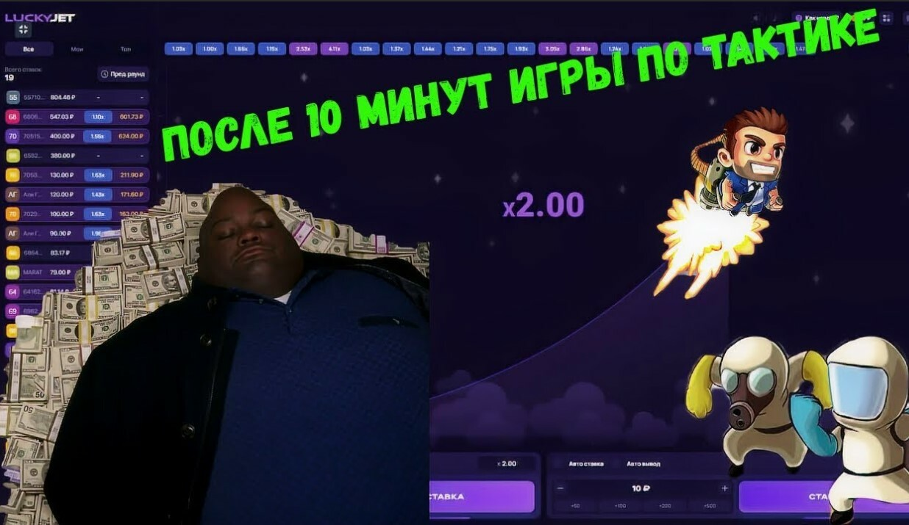
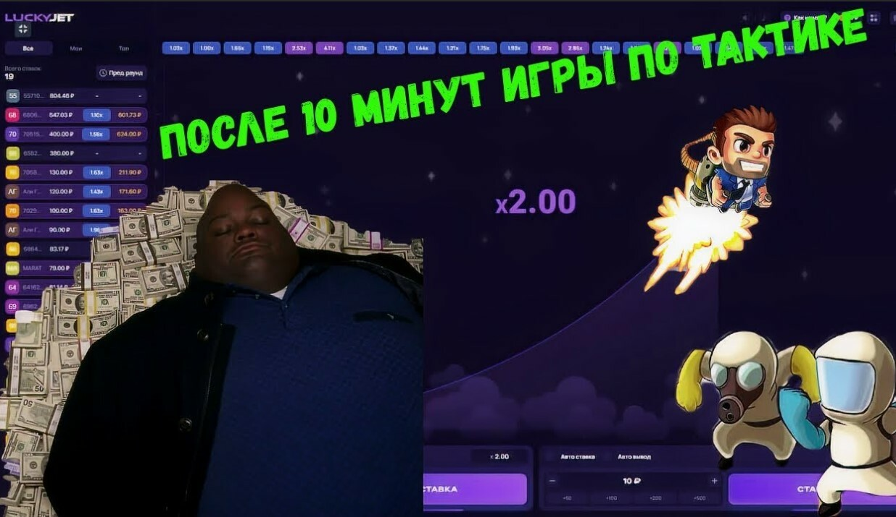

Lucky Jet игра на деньги
Ставка умножается до 1000 раз!
Зарабатывай каждый день, играя в Lucky jet.
Ставка умножается до 1000 раз!
Зарабатывай каждый день, играя в Lucky jet.
Luсky Jet – новейшее азартное развлечение, которое подойдет новому поколению игроков. Ты можешь умножить ставку в несколько раз, буквально за несколько секунд! Luсky Jet устроен на схеме коэффициентов, которые можно проверить в настоящий момент и это считается единственной реальной гарантией честности в индустрии азартных игр. Ведь каждый игрок может видеть ставки всех игроков, их выигрышы, а главное ставить в те моменты, когда начинается череда больших иксов!
Выбирай сам когда забрать свой выигрыш!
Создайте аккаунт в 1WIN, на главной панели кликните на вкладку "Игры" и в открывшимся окне вы найдете Lucky Jet в 1WIN. Или же просто через вкладку поиск.
 

Lucky Jet - это игра по типу Авиатора на деньги, правила очень схожи друг с другом. Игроков радует новая графика, увлекательная анимация и большие выигрыши! В новой игре полет идет на большие иксы и редко обрывается в самом начале, что так расстраивало многих игроков в Авиаторе. За небольшой период времени появилось тысячи игроков, которые уже успели сорвать джекпот. Пришла и ваша очередь!